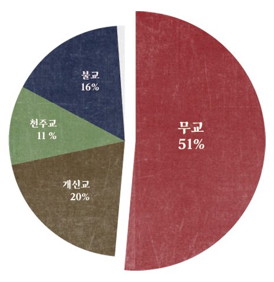
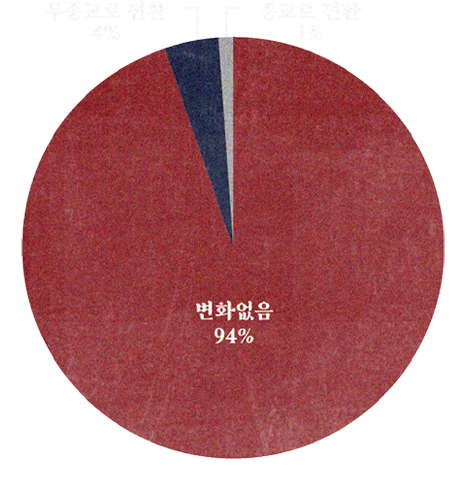

the aging
of religion
다음 세대 없는 믿음은 지속 가능한가···
지금 종교는...
1월 6일 한국리서치가 발표한 ‘2025년 종교인식조사: 종교 인구 현황과 종교 활동’ 보고서에
따르면 지난해 기준 국내 종교 인구 비율은 개신교 20%, 불교 16%, 천주교 11%로 집계됐다.
반면 믿는 종교가 없다는 응답은 51%로 절반을 넘었다.
2018년 조사 시작 이후 흐름을 보면 주요 종교 비율은 큰 변동 없이 유지되고 있으며,
무종교 인구 역시 50% 안팎에서 정체 상태를 보이고 있다. 보고서는
“종교 인구 비율에 큰 변화가 없다는 것은 신규 신자 유입이 이탈을 상쇄하는
수준에 머물러 있음을 의미한다”고 분석했다.

18~29세의 경우 72%가 종교가 없다고 답했고, 30대 이하 전반에서도 무종교 비율이 60%를
넘어섰다. 보고서는 “전체 성인 인구 중 30대 이하 비중이 30%인 점을 감안하면 젊은층의
종교 이탈이 상대적으로 크다”며 “전년 대비 무종교 비율이 소폭 증가한 점을 고려할 때
종교 인구의 고령화는 당분간 이어질 가능성이 크다”고 내다봤다.
응답자의 94%는 1년 전과 비교해 믿는 종교에 변화가
없다고 답했다. 종교가 있다가 무종교로 전환한 비율은
4%, 무종교에서 종교를 갖게 된 경우는 1%에 그쳤다.
종교별 이탈률은 불교 9%, 개신교 8%, 천주교 7% 수준이었다.

종교고령화의 원인은 무엇일까?
한국갤럽은 "지난 20여년간 종교인 감소의 주된 원인은 청년층에 있다"며
"젊은 교인 신규 유입과 기존 교인 이탈이 전반적 교세 약화와 고령화를
초래한 것으로 보인다"고 분석했다.
초고령사회에는 사망이 많아지면서
‘죽음’에 대한 생각과 준비가 더 자연스럽게 일상으로 들어올 것이다.
개인적 연령이 높을수록 더 종교에 참여하고 깊은
신앙을 갖는 경향을 보인다.
대부분의 종단들에서 청년기 여초 현상이 두드러지는데,
이런 성비 불균형은 청년들의 종단 내 혼인과 출산을 통한
신도 재생산에도 부정적 영향을 미쳐 종교의 고령화를 촉진할 것이다.
이와 같이 종교계 및 개별 종단들도 사회의 구성원으로서 우리 사회와
마찬가지로 고령화, 청년문제와 저출산, 지역격차 등
심각한 인구학적 도전에 직면해 있다.
종교계도 교단 내 인구문제 대응 방안을 적극적으로 모색해야 한다.
어떤 사회집단이든 구성원의 재생산에 장애가 발생하면
지속적 존립이 위협받기 때문이다.
그렇다면.. 20대가 종교를
가지지 않는 이유는 무엇일까?
.
.
.
고령화 시대에 따라 종교도 고령화되어가고 있습니다.
늘어가는 흰머리만큼 공동체의 깊이는 깊어지지만
동시에 다음 세대로 신앙과 가치를 이어줄 연결고리는
점점 옅어지고 있습니다.
지금 우리에게 필요한 것은
나이를 불문하고 모두가 함께 머무를 수 있는
지속 가능한 공동체의 모습입니다.